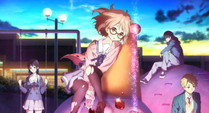

-
紫罗兰永恒花园
作品介绍
某个大陆的，某个时代。 大陆南北分割的战争结束了，世界逐渐走向了和平。 在战争中、作为军人而战斗的薇尔莉特·伊芙加登离开了军队，来到了大港口城市。怀抱着战场上一个对她而言比谁都重要的人告诉了她“某个话语”―― 街道上人群踊跃，有轨电车在排列着煤气灯的马路上穿梭着。薇尔莉特在霍金斯中校的公司做“代写书信”的工作。
-

境界的彼方
作品介绍
作品描述了“那一族”唯一存活下来的少女与根本说不上是存在的“半妖”少年的二个人之间的故事。 由人类与妖梦所生出的少年神原秋人某天在学校的屋顶上邂逅了从天而降的少女栗山未来。就算在异界士中，她也算是拥有着特异之诅咒一族最后活下来的少女。 不变的教室、不变的日常、不变的世界，原本日子理应如此一天一天的走过。
-
玉子市场
作品介绍
坐落于某个小镇的兔山商店街（うさぎ山商店街）上，有个经营饼店的少女－－北白川玉子。 除了帮忙店里的事情，她亦有跟学校的朋友常盘绿和牧野神奈参与舞棒部活动。 而饼店对面的大路家是同一行业的竞争对手，两边的父亲经常都因生意问题而喧闹一番。 然而大路家的儿子大路饼藏却是玉子的朋友，但玉子从没注意到饼藏的好感。
-
free!
作品介绍
小学时期，四位隶属游泳学会的成员于毕业前的大会夺得冠军，留下难忘的回忆后分道扬镳。 时移世逆，悠闲度日的高中生少年七濑遥，突然有一天遇到他小学时代的游泳社的伙伴松冈凛。凛一边怀旧的同时向遥提出挑战，结果凛将遥压倒性击败。 以此为契机，遥决定跟高中同校的橘真琴和叶月渚重新集结
-
轻音少女
作品介绍
春季，新生决定加入的社团的时节。 田井中律带着发小秋山澪到轻音部参观。 可是全体部员都已经毕业的轻音部，如果不能重新召集起4名成员就会被废部。 加上了琴吹䌷这个伙伴，正在寻找最后一人的时候，把轻音部误解为“轻松的音乐”的乐器新手——平泽唯来到了社团活动室。
-
甘城光辉游乐园
作品介绍
被谜之转校生——千斗五十铃强迫而接受游乐园约会的可儿江西也，不知何故被拉到的地方。 却是一个充满了破旧游乐设施的日本第一的遗憾游乐园——甘城辉煌游乐园。这座游乐园建立于泡沫经济全盛期，近年假日来客人数不超过3000人，同时也是臭名远播的最糟约会地点代名词